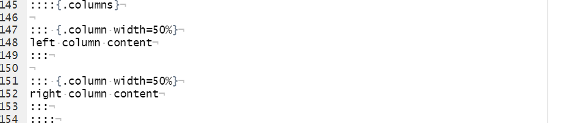
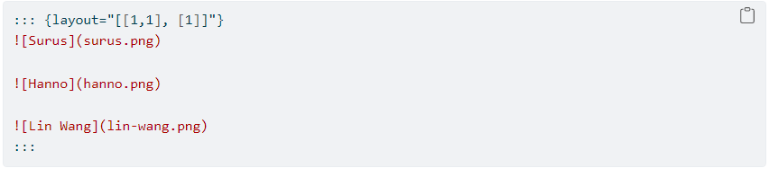
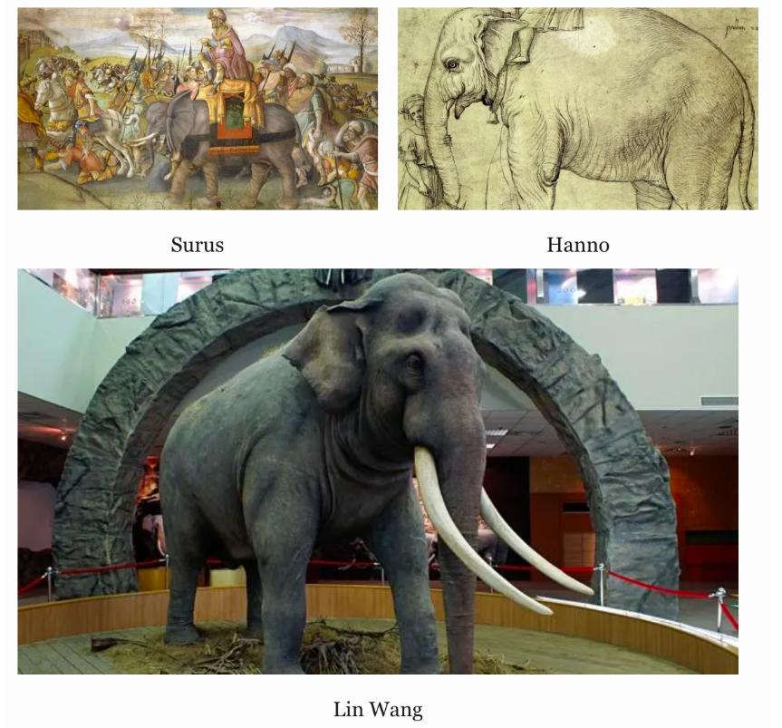

Quick Aside: R Markdown vs. Quarto?
RStudio is Now Posit, aiming to broaden their scope to include software for other programming languages (e.g Python, Julia)
New publishing system called Quarto (already launched) is part of this multilanguage effort
What is Quarto?
Quarto is a multi-language, next generation version of R Markdown from RStudio
This change shouldn’t affect R users much - it can render most existing Rmd files with few changes
Do I Have to Switch From R Markdown? Nope! R Markdown is not going away and will continue to be supported
However, Quarto has some exciting features (some shown today) and will continue to develop and mature.
Moving From R Markdown
Quarto documents end in .qmd instead of .rmd and have some minimal required formatting changes:
-YAML Header now uses format instead of output and allows auto-complete to make editing the YAML more fool-proof.
-Global chunk options are set in YAML header using execute instead of in a knitr setup chunk.
-Individual chunk options are also set in YAML in each chunk as needed, using the “hashpipe” (#|).
Moving From R Markdown: YAML Header
- YAML Header now uses
formatinstead ofoutputand allows auto-complete to make editing the YAML more fool-proof.
Moving From R Markdown: YAML Header
- YAML Header now uses
formatinstead ofoutputand allows auto-complete to make editing the YAML more fool-proof.
Moving From R Markdown: YAML Header 2
- Global chunk options are set in YAML header using
executeinstead of in a knitr setup chunk.
Moving From R Markdown: YAML Header 2
- Global chunk options are set in YAML header using
executeinstead of in a knitr setup chunk.
R Markdown:
knitr::opts_chunk$set(echo=FALSE)Quarto:
title: "My-Title"
subtitle: "Until now!"
execute:
echo: falseMoving From R Markdown: YAML Chunk Options
- Individual chunk options are also set in YAML in each chunk as needed, using the “hashpipe” (
#|).
Moving From R Markdown: YAML Chunk Options
- Individual chunk options are also set in YAML in each chunk as needed, using the “hashpipe” (
#|).
R Markdown:
```{r}
print("hi")
```Quarto:
```{r}
#| include: True
#| results: false
print("hi")
```Quarto Features: Flexible Layouts With Multiple Columns
How to specify multiple column layout:

Quarto flexible layout using {layout}

You can now easily organize your report using various layouts including column formats Here, we want the first image spans the entire first row and two equal sized figure in the second row
The layout attribute is a 2-dimensional array where the first dimension defines rows and the second columns. In this case “layout=”[[1,1], [1]]” translates to: create two rows, the first of which has two columns of equal size and the second of which has a single column.
Quarto flexible layout using {layout}

Customize tbl_summary() Using Arguments
tbl_summary(
sm_trial,
by = trt,
type = age ~ "continuous2",
statistic =
list(
age ~ c("{mean} ({sd})",
"{min}, {max}"),
response ~ "{n} / {N} ({p}%)"
),
label =
grade ~ "Pathologic tumor grade",
digits = age ~ 1
)Error in tbl_summary(sm_trial, by = trt, type = age ~ "continuous2", statistic = list(age ~ : could not find function "tbl_summary"by: specifies a column variable for cross-tabulationtype: specifies the summary typestatistic: customize the reported statisticslabel: change or customize variable labelsdigits: specify the number of decimal places for rounding
Update tbl_summary() with add_*()
Error in sm_trial %>% tbl_summary(by = trt) %>% add_p() %>% add_q(method = "fdr"): could not find function "%>%"add_p(): adds a column of p-valuesadd_q(): adds a column of p-values adjusted for multiple comparisons through a call top.adjust()
Update tbl_summary() with add_*()
sm_trial %>%
tbl_summary(
by = trt,
missing = "no"
) %>%
add_overall() %>%
add_n() %>%
add_stat_label(
label = all_categorical() ~ "No. (%)"
) Error in sm_trial %>% tbl_summary(by = trt, missing = "no") %>% add_overall() %>% : could not find function "%>%"add_overall(): adds a column of overall statisticsadd_n(): adds a column with the sample sizeadd_stat_label(): adds a description of the reported statistic
Update with bold_*() or italicize_*()
sm_trial %>%
tbl_summary(
by = trt
) %>%
add_p() %>%
bold_labels() %>%
italicize_levels() %>%
bold_p(t = 0.8)Error in sm_trial %>% tbl_summary(by = trt) %>% add_p() %>% bold_labels() %>% : could not find function "%>%"bold_labels(): bold the variable labelsitalicize_levels(): italicize the variable levelsbold_p(): bold p-values according a specified threshold